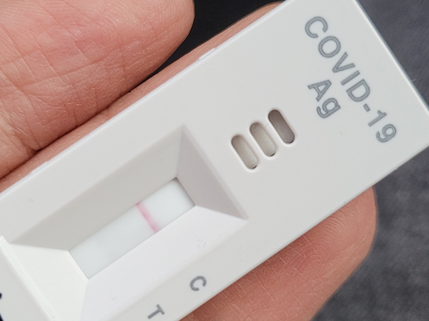
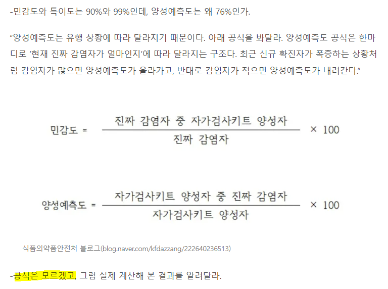
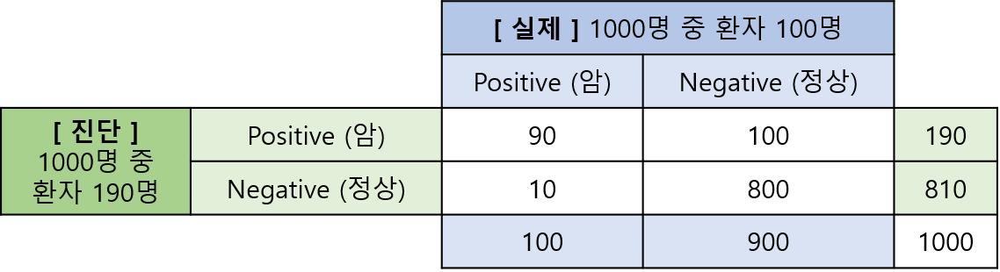
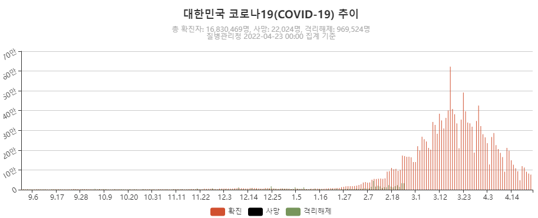
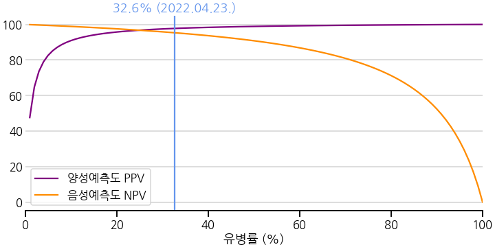
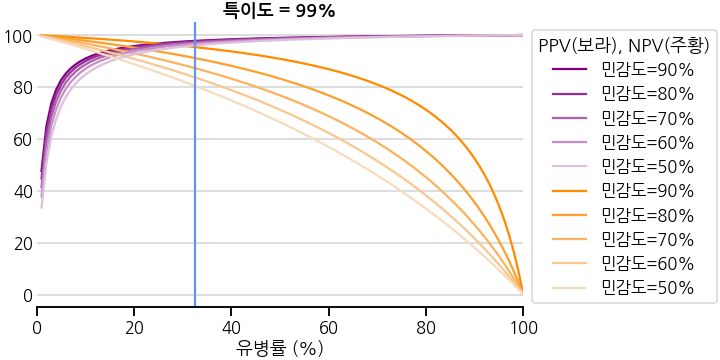
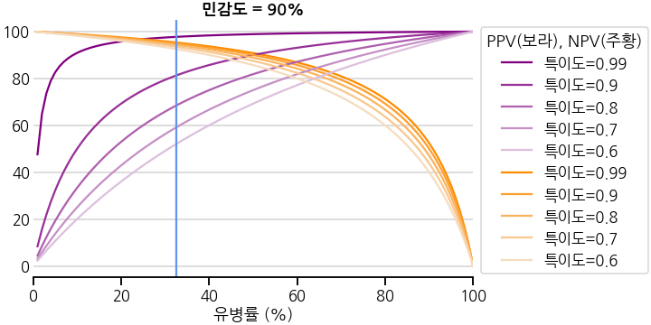
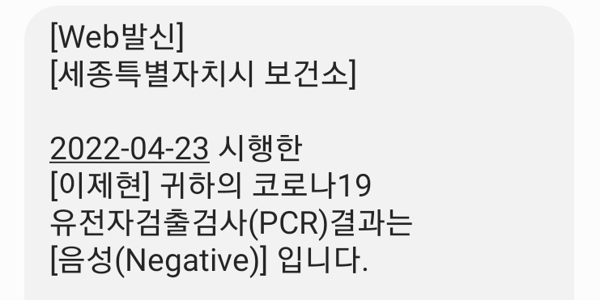
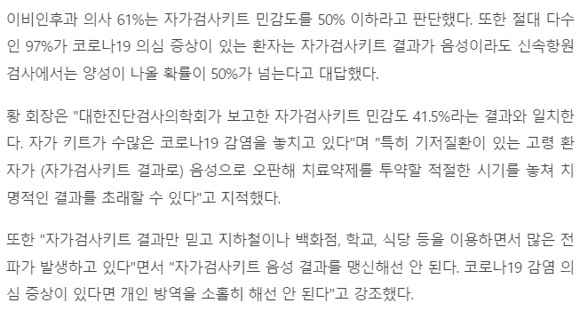
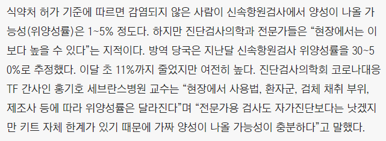

- 코로나-19 자가진단키트에서 두 줄이 떴습니다.
- 올 게 왔나 싶으면서도, 이거 얼마나 믿을만한지 몹시 궁금했습니다.
- 선별진료소 결과를 기다리며 분류 기초를 복습합니다.
1. 사건의 발단
식품의약품안전처: 자가진단키트 양성예측도 76%
경향신문: 자가검사키트, 민감도 특이도는 뭐고 양성예측도는 또 뭔가요?
- 3일 전, 안녕하시냐고 묻는 안녕하지 못한 내용의 문자가 왔다.
- 업무 효율화 관련해서 자주 뵙던 분이 걸렸단다. 문자로 안부를 여쭈니 다행히 괜찮다고 하신다.
- 바닷가에서 학회 발표를 준비하다 말고 10여분 차를 달려 읍내에 갔다.
- 병원에서 신속항원검사 음성확인서를 받았지만 기분 탓인지 목이 아프다.

- 그리고 오늘, 자가진단키트에 매우 희미하지만 두 줄이 떴다.
- 주말 저녁이라 신속항원검사를 할 동네 병원은 모두 닫았고, 시청 선별진료소에서 검사를 했다.
- “두 줄 맞습니다. 이쪽에서 검사받으세요. 결과는 내일 아침 9시 전에 나옵니다.”
훨씬 정확하다는 PCR 검사가 나오겠지만 자가진단키트의 신뢰도가 궁금해졌다.
민감도
sensitivity90%, 특이도specificity99%.그런데 양성예측도
positive predictive value (PPV)76%.내 밥벌이이고, 비슷한 문제를 몇 번이나 손계산으로 풀었는데도 왜 이런지 헷갈린다.
그래서 얼마나 잘 맞는 거냐는 기자의 마음이 이해가 간다.
기자는 “공식은 모르겠고”라고 해도 되지만 난 그러면 안 된다.
당사자가 된 이상 최선을 다해 정리해보자.
지금처럼 이 문제에 진심인 적이 없다.
2. 복잡한 분류 예측
쉽게 이해하는 특이도, 민감도, 양성 예측도
wikipedia: sensitivity and specificity
- 분류 예측 문제는 모델링보다 평가가 훨씬 복잡하다.
- 단순히 맞다/틀리다로 끝나는게 아니기 때문이다.
- 어떤 마을 1000명 중 100명이 폐암에 걸렸고, 이들이 병원에서 진단을 받는다고 하자.
- 진단 기기나 의사의 판단이 100% 정확하지 않기 때문에 오진이 발생한다.
- 병이 없는데 환자 진단을 받기도 하고, 환자에게 정상이라고 하기도 한다.

2.1. 전지적 의사 시점
- 여기서 진단을 잘 했다는 둘로 나뉜다.
- (1) 환자를 환자라고 하는 경우 : 민감도 = $\dfrac{90}{90+10} = 90$%
- (2) 비환자를 비환자라고 하는 경우 : 특이도 = $\dfrac{800}{800+100} = 89$%
- 둘 다 준수하다.
2.2. 환자의 시점
- 하지만 환자의 입장은 조금 다르다. 본인이 받은 진단의 신뢰도가 중요하다.
- (1) 양성(암) 진단을 받은 경우 : 양성 예측도 = $\dfrac{90}{90+100} = 47$%
- (2) 음성(정상) 진단을 받은 경우 : 음성 예측도 = $\dfrac{800}{800+10} = 99$%
- 음성 예측도는 매우 높지만 양성 예측도가 크게 낮다. 데이터가 1:9로 불균일하기 때문이다.
- 귀찮은 의사가 대충 음성이라고 해도 맞출 확률이 90%인 것이다.
3. 코로나-19
코로나-19 실시간 현황판
행정안전부: 주민등록 인구 통계
한겨레: ‘가짜양성’ 넷 중 하나… 자가키트 양성 뒤 PCR 음성 23.9%
3.1. 자가진단키트 검사자 시점
- 자가진단키트의 민감도와 특이도는 각기 90%와 99%.
- 그리고 2022.04.23. 현재 우리 나라의 누적 확진자는 16,830,469명
- 우리 나라의 총 인구는 51,610,695명 고려시 확진자 비율은 32.6%.
- 신속항원검사와 PCR로 최종 검증이 된다 가정하고 종합하면 다음과 같은 그림이 그려진다.
- PCR보다 자가진단키트가 확진자를 3%가량 덜 잡아내고 있으며,
- (1) 양성(확진) 진단을 받은 경우 : 양성 예측도 = $\dfrac{29.3}{29.3 + 0.7} = 97.7$%
- (2) 음성(미확진) 진단을 받은 경우 : 음성 예측도 = $\dfrac{66.7}{66.7 + 3.3} = 95.3$%
- 생각보다 자가진단키트가 믿을만 하다는 결론인데,
- 한때 자가키트의 신뢰성 문제가 언론에 보도된 때는 2월 5일로 오미크론이 본격적으로 유행하기 전이었다.

- 앞서 양성예측도 76% 계산시 전국민의 3%가 감염되었다는 것을 가정한 것에 비해 10배 가량 많기 때문에 데이터 불균형에 의한 문제가 해소되었다고 볼 수 있다.
3.2. 유병률 영향
- 양성 예측도와 음성 예측도 모두 전국민 중 얼마나 병에 걸렸냐는 유병률
prevalence의 영향을 받는다. - 수식으로 표현하면 다음과 같다.
$$양성예측도 PPV = \frac{민감도 \cdot 유병률}{민감도 \cdot 유병률 + (1- 특이도) \cdot (1 - 유병률)}$$
$$음성예측도 NPV = \frac{특이도 \cdot (1-유병률)}{특이도 \cdot (1-유병률) + (1-민감도) \cdot 유병률}$$
- 자가진단키트 기준인 민감도 90%와 특이도 99%를 넣고 그림을 그리면 이렇다.
- 데이터 불균형 문제가 해결되어 두 예측도가 모두 높은 상황임을 알 수 있다.

3.3. 민감도와 특이도 영향력
자가진단키트가 불량이거나 검사 방법이 제대로 이루어지지 않은 경우,
민감도와 특이도가 기대치에 미치지 못할 수 있다.
특이도를 99%로 고정하고 민감도를 50%까지 떨어트리면 양성예측도는 별 차이가 없는 반면 음성예측도가 80%까지 감소한다.
거꾸로, 민감도를 90%로 고정하고 특이도만 60%까지 떨어트리면 양성예측도가 50% 수준으로 감소한다.
공장에서 제품이 제대로 나온다는 가정 하에, 올바른 검사 방법이 가장 중요한 요소일지도 모른다.
4. 결론
- 검사를 제대로 했다는 전제 하에,
- 즉 자가진단키트가 실제로 민감도 90%와 특이도 99%를 발휘한다는 전제 하에 상당히 믿을 만한 수준이다.
- 많은 분들이 코로나-19에 걸리지 않고 무사히 이 시기를 지나가기를 바란다.
5. 에필로그
청년의사: 신속항원진단키트로 입원 전 코로나 검사했더니 민감도 17.5%
청년의사: 이비인후과 전문의 60% ‘자가검사키트 정확도 절반 이하’ 우려
조선일보: 신속항원검사 11%는 음성을 양성으로 판정
- PCR 검사 결과 음성.
- 결론적으로 위양성(False Positive)이었다.

- 자가진단키트의 신뢰성에 대해 지속적으로 의문이 제기되고 있다.
- 민감도 문제가 특히 심각하다고 하다.

- 잘 찌른 자가진단키트와 유사할 신속항원검사가 음성을 양성으로 판정하는 비율이 11%라고 한다.
- 내가 이 11%에 들었던 것 같다.
- 결론이 무엇이건, 확률이 어쨌건, 모두 건강하자.
